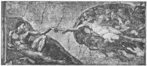
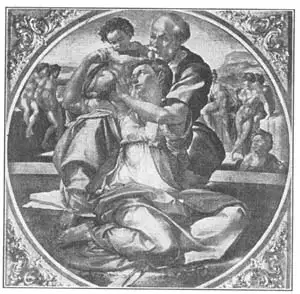

12
THE SCULPTOR WHO PAINTED PICTURES
画画的雕刻家

AT THE time of the Renaissance, young girls used to wear golden garlands or wreaths around their hair, as girls nowadays wear bracelets round their wrists or rings on their fingers. One goldsmith was so famous for the garlands he made that he was called Ghirlandajo (Gear-lan-dah’yo), which means a maker of garlands. Ghirlandajo gave up making garlands and began to paint pictures instead. He made many very fine pictures, but the chief thing he made was an artist, Michelangelo (Mike-el-an’je-lo). Michelangelo studied with Ghirlandajo for three years, and the teacher paid the pupil, instead of charging for his teaching!
Ghirlandajo was probably a good teacher of painting, but young Michelangelo liked making statues better than painting pictures. So he left Ghirlandajo’s workshop and began to study sculpture.
Now, Michelangelo was not a very easy person to get along with. He didn’t mind saying what he thought, even if it hurt other people’s feelings. One day he said he thought another young sculptor’s statue wasn’t much good. This probably was true, but the other young sculptor got very angry and hit Michelangelo on the nose. He punched him so hard that the nose was broken. All the rest of his life Michelangelo had an ugly crooked nose.
Michelangelo soon became famous as a sculptor—a man who makes statues or sculpture. He moved from the city of Florence to Rome, and there he worked for the Pope, who liked Michelangelo’s work so much that he didn’t want him to make statues for any one else.
This Pope wanted to have pictures painted on the ceiling of the Sistine Chapel in Rome. The Sistine is a chapel in the Vatican, the palace of the Popes. It has a very high curved ceiling. The Pope asked Michelangelo to paint the pictures on the ceiling, but the artist said that he was a sculptor and didn’t at all want to paint. Then some enemies of his spread around the story that be didn’t want to do it because he wasn’t good enough at painting and was afraid to try. This made Michelangelo angry. He made up his mind he would show that he could do the work as well as any painter in the world.
First of all, he had to have a scaffolding built in the chapel. The scaffolding was a wooden framework with boards across the top near the ceiling so that Michelangelo could climb up on the boards and paint.
If you stop to think a moment, you will see how hard it must have been to paint pictures on a ceiling. The painter had to lie on his back on the scaffolding. He had to be so close to the ceiling that he could see only the part right above him, unless he climbed down the ladder and looked up. The ceiling of the Sistine Chapel is very large. The pictures on it had to be large so people could see them plainly from the floor down below. How would you like to draw the head of a man when you could not see where his feet were to be? Even if you were a good painter, that would be hard to do. And if Michelangelo put too much paint on his brush the paint would drip down all over him. No wonder he didn’t want to do the job!
But once he had started, nothing could stop him. At first he had some other artists to help him, but he found the helpers couldn’t do the work just as he wanted it, so he sent them away and kept on all by himself.
It took him four and a half years to finish the ceiling, and that was really a very short time when you think of the work that had to be done! The Pope kept telling him to hurry and Michelangelo even moved his bed into the chapel so he would be able to spend more time painting.

No. 12-1 CREATON OF MAN（《上帝造人》） MICHELANGELO（米开朗基罗 作）
The Pope also kept telling him how the pictures should be done. Michelangelo didn’t like this, because he felt he knew more about such things than the Pope did. So one day when the Pope was standing on the floor calling up advice to the painter, Michelangelo let a hammer drop from the scaffolding. He was careful to let it fall quite near the Pope—near enough to scare him. After that the Pope stayed out of the chapel while Michelangelo was painting!
Finally, the ceiling was almost finished. Michelangelo wanted to add some touches of gold paint, but the Pope was so anxious to have the chapel opened that the artist had the scaffolding taken down before the gold was put on.
Then people came from all over Rome to see what the famous sculptor had done as a painter. What they saw was a painting of Bible pictures. Around the edges of the ceiling were huge figures of prophets who had foretold the coming of Christ. Down the middle of the ceiling were shown pictures of the Old Testament stories—The Six Days of Creation, Noah’s Ark and the Flood, and others. The pictures were drawn so well that people were astonished.
The men and women painted on the ceiling look strong and solid. They look like statues, which of course are the shape of real people all around, and not just flat pictures. So we call Michelangelo’s paintings sculpturesque or like sculpture.
In this photograph you see a small part of the ceiling. It shows the Creation of Man. Notice what great shoulders and muscles Adam has.
Almost thirty years after the ceiling was painted, Michelangelo was asked to paint a picture on the wall over the altar at one end of the Sistine Chapel. The wall was already covered with a painting by Perugino which had to be destroyed. Michelangelo’s painting that took the place of Perugino’s is called “The Last Judgment.” It is one of the most famous pictures ever painted, though it is not so great as the six ceiling pictures. It is crowded with the figures of men and women rising from the dead on Judgment Day.

No. 12-2 FAMILY（《神圣家族》） MICHELANGELO（米开朗基罗 作）
Gourtesy of The University Prints
Michelangelo painted very few other pictures. The only small finished painting that we are sure was done by him is a tondo of the Holy Family. It shows the Madonna on her knees, holding over her shoulder her little Son so that Joseph can see Him. The picture shows how this artist liked to paint people in strange positions.
Michelangelo lived to be a very old man. As he grew older he seemed to grow crosser and harder to get along with than ever. But though he was a cranky old fellow, every one respected him and admired him as one of the greatest artists in the history of the world. In the sculpture part of this book I’ll tell you more about him.
【中文阅读】
文艺复兴时期，女孩子们通常都喜欢在头上戴金黄色的花环，就像今天的女孩子喜欢在手腕上佩戴手链或在手指上戴戒指一样。有一个金匠因打造花环而声名大噪。人们叫他吉兰达约，意思是做花环的人。后来，吉兰达约不做花环了，却开始画画。他画了不少好看的画，但他做过的最了不起的事是培养出了一个画家——米开朗基罗。米开朗基罗跟随吉兰达约学习了三年，这位老师非但没有收他学费，反倒给他钱花。
吉兰达约或许是一位很好的绘画老师，但是青年米开朗基罗却对雕塑更感兴趣。于是他离开了吉兰达约的画室，开始学习雕刻。
现在看来，米开朗基罗是一个不易相处的人。他总是想到什么就说什么，哪怕会伤害别人的感情。有一天，他说他认为另外一位年轻雕刻家的雕像不怎么样。他说的可能是实话，但那位年轻人非常生气，随手一拳，正好打在米开朗基罗的鼻子上。年轻人用力过猛，把米开朗基罗的鼻梁打断了。从那以后，米开朗基罗的鼻子就变得又歪又丑了。
米开朗基罗很快就成了著名雕刻家——一个制作雕刻或雕像的人。他从佛罗伦萨搬到罗马，在罗马为教皇工作。教皇非常喜欢米开朗基罗的作品，甚至不想让他再为任何别人刻像。
这位教皇想给罗马西斯廷教堂的穹顶配些画。西斯廷教堂位于梵蒂冈，是教皇的宅邸。西斯廷教堂的穹顶是一个高高的拱顶。教皇叫米开朗基罗给这拱顶配画，可是这位艺术家说他是雕刻家，根本不想画画。于是，反对者们便散播谣言说，他不想画画是因为他根本就画不好画，试都不敢试。这可激怒了米开朗基罗。他下决心要向人们证明自己也能像世界上任何画家一样画好画的。
首先，他必须在教堂里支一个脚手架。脚手架是一个木制的框架，在靠近穹顶的顶端铺上木板，这样可以从脚手架登上木板作画。
如果你稍微想一想，就会明白，在穹顶上画画有多难。画家必须躺在脚手架上。他得离穹顶很近，但这样他就只能看见他正上方的那部分，除非他爬下梯子站在地面 仰视时才能看得清楚。西斯廷教堂的穹顶非常大，所以上面的画也要画得大，这样站在地面上的人才能看得清楚。如果不确定好人的脚部位置，就不能去画他的头部。即便是一位绘画高手，也很难做到。而且如果米开朗基罗的画笔多蘸了颜料，那就会滴得他浑身都是。难怪他不愿意干这活儿！
可是一旦他着手干了，就什么也阻止不了他。他开始时请了几位画家来帮忙，但后来发现这批帮手根本执行不了他的设想，所以就把他们都打发走了，最后坚持一人干。
米开朗基罗花了四年半的时间才完成这幅天顶画。想想这幅画的工作量吧，时间真的短暂啊！罗马教皇一直催他抓紧时间，所以米开朗基罗干脆把床铺搬进了教堂，这样就有更多的时间来画画了。
教皇还不停地唠叨要怎样画。米开朗基罗对此很反感，因为他觉得他比教皇更懂绘画。所以，有一天，当教皇站在地板上对画家指手画脚时，米开朗基罗故意将一把锤子从脚手架上掉下来。但是他很小心，让锤子刚好落在教皇脚边——足以吓到他的地方。这事发生后，在米开朗基罗画画时，教皇就不待在教堂里了。
天顶画终于差不多完成了。米开朗基罗想再添加几笔金色线条。可是教皇十分性急地要把教堂对外开放，所以还没等画家涂上金色，脚手架就被拆走了。
接着，罗马人从四面八方赶来，要看看这位著名的雕刻家到底画了什么。他们看到的是一幅《圣经》画面。在穹顶的四周画的是预言基督降临的先知们的巨幅画像。天顶中间的绘画讲述了《旧约》里的故事——像六日创世、诺亚方舟和洪水等。所有的画都画得很好，人们看后非常惊讶。
穹顶上画的男男女女看上去强壮而结实，就像我们周围的真人一样，具有立体感，像雕刻，并非普通的平面图。所以我们把米开朗基罗的画叫做“类雕刻画”，意思是类似雕刻。
在这幅画上你可以看见天顶画的小部分。它展示了 “上帝造人”的故事。留意亚当那宽阔的肩膀和发达的肌肉。
米开朗基罗完成这幅天顶画大约三十年后，他又被邀请在西斯廷教堂祭祀台后面的墙壁上画一幅画。这块墙壁上原来已经有一幅佩鲁吉诺的绘画，所以他得先把佩鲁吉诺的画覆盖掉。替代佩鲁吉诺画的是米开朗基罗的《最后的审判》。尽管这幅画没有六幅天顶画那么了不起，但它却是世界上最著名的绘画之一。画的是审判日那天复活的男女人群。
米开朗基罗其他也就没画什么画了。我们唯一能确定是他画的一幅完整的画叫做《神圣家族》的小型圆板画。画中圣母双膝跪地，将圣婴举过肩膀，好让约瑟能看见他。从这幅画可以看出，这位画家喜欢把人物画成各种奇怪的姿势。
米开朗基罗的寿命很长。随着年龄的增长，他似乎变得更加难以相处。但是尽管他是一个古怪的老头，大家都尊敬他，钦佩他，把他看作世界上最优秀的画家之一。在本书的雕刻部分，我将更详细地讲述他的故事。